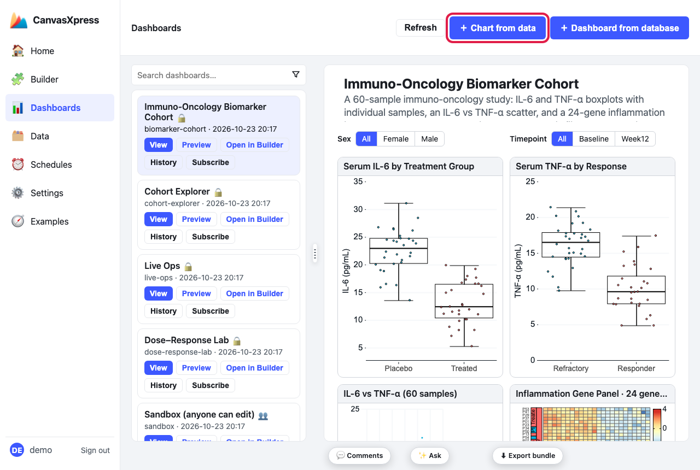
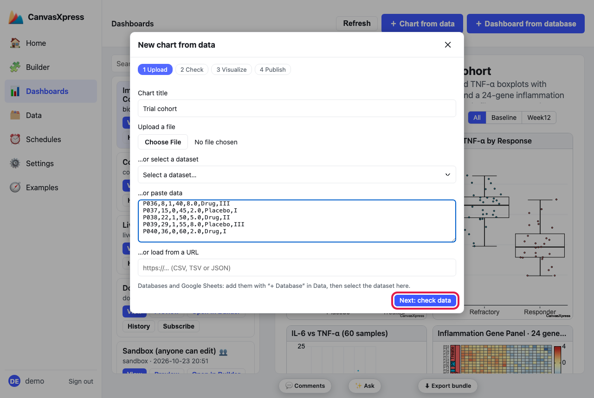
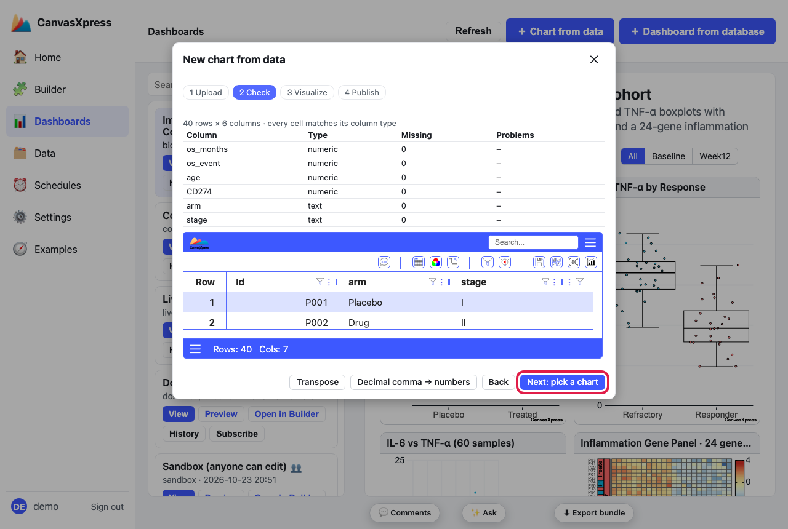
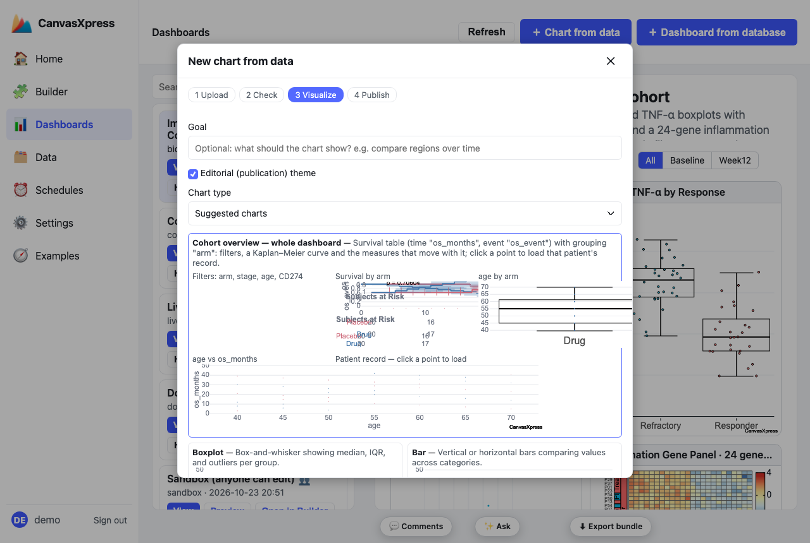
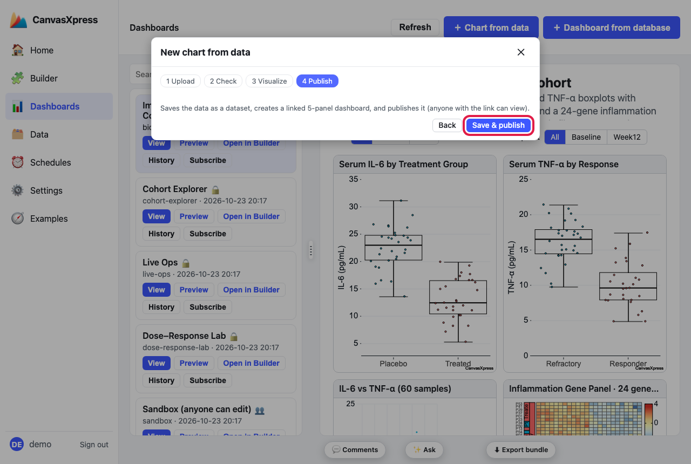
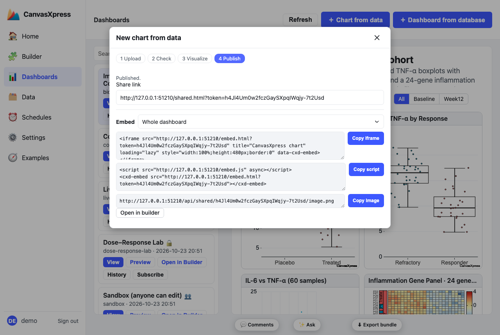
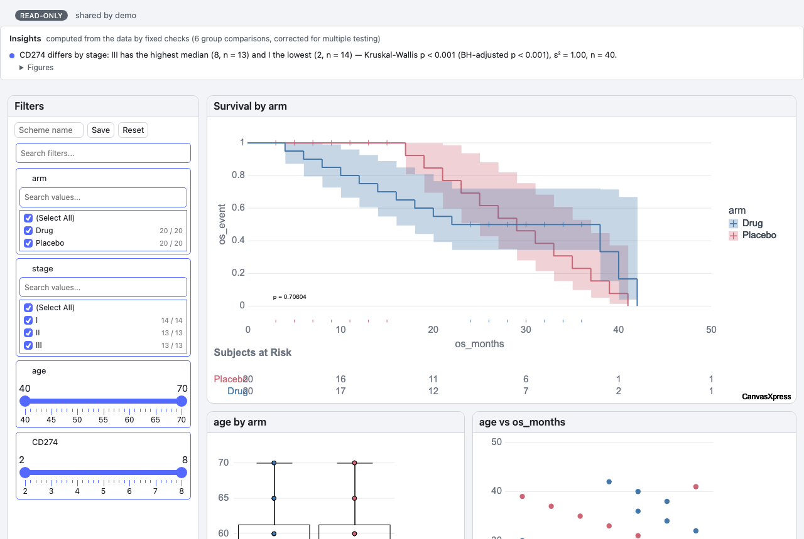
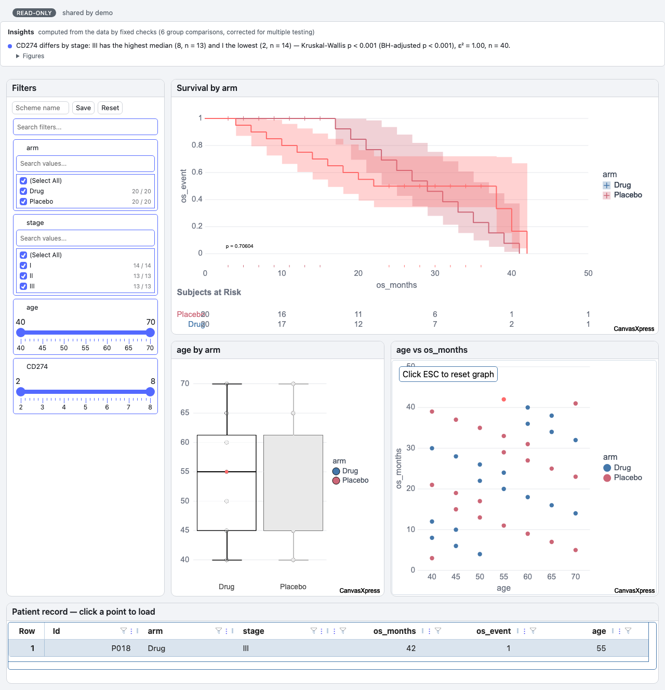

How to build a whole dashboard from one table
Give the Chart from data wizard one table and, when the table is a shape it recognizes, it offers a whole linked dashboard instead of a single chart: a Filters panel and the charts that kind of data calls for, all on the same data, so a selection in one panel selects the same rows in the others. It ends with a case card: click a point and that patient or sample loads in a one-row table. This page builds one from a patient table, step by step. It never changes your data.
What it recognizes
| Data | What the table needs | What you get |
|---|---|---|
| Patient cohort (survival table) | A numeric time column (time, os_months, PFS.days,
overall_survival_days …) and a numeric event column of 0/1 (event,
status, death …). One row per patient; the first column is the patient id. |
Filters; a Kaplan–Meier curve coloured by the best grouping column (arm, group,
treatment, stage … a text column with 2–6 levels) with a log-rank p-value and risk
table; a boxplot of another measure by that group; a scatter of that measure against survival time; the case card. |
| Sequencing run QC | One row per sample, with three or more QC metric families among the numeric columns: reads, mapping / alignment, quality (Q30, Q20 …), duplication, GC, insert size, coverage / depth, adapter, contamination. Lane, flowcell or batch columns are used for grouping. | Filters; read depth per sample (bars); mapping against duplication (scatter); a quality boxplot; the case card for a sample. |
Any other table gets the usual single-chart suggestions and nothing changes. A template is only offered when it yields at least three panels.
Patient, os_months, os_event, age, CD274, arm, stage:
Patient,os_months,os_event,age,CD274,arm,stage P001,3,0,40,2.0,Placebo,I P002,10,1,45,5.0,Drug,II P003,17,1,50,8.0,Placebo,III …
1Open the wizard
Go to Dashboards in the left menu and click ＋ Chart from data.

Dashboards → ＋ Chart from data (outlined).
2Give it the table
Use whichever is easiest: upload a file (CSV, TSV, JSON …), select a dataset you already have from the drop-down list, paste the table (first row = headers), or load it from a URL. Type a title, then click Next: check data.

A pasted table and a title. The dataset list and file box are on the same step.
3Check the data
The wizard reads the table with the CanvasXpress engine and lists every column with its type, how many cells are
missing, and any cell that doesn't match its column's type (with the row numbers). Fix problems before going on:
Transpose flips a table that has samples as columns, and Decimal comma → numbers converts values
like 3,5. Then click Next: pick a chart.

Here every cell matches its column type: os_months, os_event, age
and CD274 are numeric; arm and stage are text.
4Pick the whole dashboard
When the table is a recognized shape, the first card on the Visualize step is the dashboard, already selected: Cohort overview — whole dashboard. It lists the panels it will make and shows live thumbnails of the charts. The single-chart cards below it are still there if you'd rather have one chart.

The Cohort overview card (selected) above the single-chart suggestions. The thumbnails are small previews of the real charts.
Click Next: publish.
5Publish
The last step says what will happen: it saves the data as a dataset, creates the linked five-panel dashboard, and publishes it (anyone with the link can view). Click Save & publish.

Save & publish (outlined).
6Share it or embed it
You get a share link to the live dashboard, and ready-made embed code for a page of your own: an
iframe, a script tag with a <cxd-embed> element, and a PNG image address for
places that cannot run scripts, such as email. There is also an Open in builder button.

The share link and embed options. Use Copy iframe, Copy script or Copy image.
7Use the dashboard
Open the share link. The Filters panel narrows every chart at once, the survival curve compares the groups, and an Insights strip lists what the data shows (see How to add insights). The case card at the bottom starts on the first patient.

The published dashboard: Filters, Survival by arm, a boxplot and a scatter, and the case card.
8Click a point to load a case
Click any point on the scatter. That patient loads on the case card and is picked out in the other charts (the box and the points that show them), while every chart keeps the whole dataset, so the survival curve and the distributions stay meaningful.

After a click: P018 is on the case card, and the same patient is highlighted in the boxplot.
If you don't see the dashboard offer
- Check the Check step's column types: the time and event columns must be numeric, and the event
must be 0/1. A text event such as
Dead/Aliveis not offered, because the survival curve would be wrong; recode it to 1/0 first. - The wizard needs the records as rows and measures as columns. If your table is the other way round, click Transpose on the Check step.
- For run QC, the table needs three or more QC metric families among its numeric columns.
Then make it yours
- Add a guided tour: How to build a storyboard.
- Add limits you care about to the Insights strip: How to add insights.
- The same dashboards can be generated from code or an AI agent: see
Using the R and Python packages, and the
suggest_canvasxpress_dashboardtool of the canvasxpress MCP server.
The full reference is docs/dashboard-from-data.md in the repository.